Documentation
Everything SnmpLens does, and the reasoning where the reasoning matters. If something here disagrees with the application, the application is right — please open an issue.
Installing
SnmpLens is one executable with no runtime to install. Pick the asset for your platform on the download page, which also lists the checksums and how to verify them.
Nothing is written outside your user configuration directory, and no service is registered unless you ask for one in Settings.
Linux: the application needs GTK 3 and WebKit2GTK at runtime. On
Debian and Ubuntu, libgtk-3-0 and libwebkit2gtk-4.1-0.
The .deb declares them; the tarball does not.
Your first query
- Open the Operations tab (Ctrl 1).
- Type a target — a hostname, an IPv4 address, or an IPv6 literal.
- Set the version and community, or the v3 credentials, in Settings (Ctrl ,).
- Pick an OID from the MIB tree on the left, or type one, and press GET.
Double-clicking a node in the tree performs a GET on it directly. For a whole subtree, use WALK — or GETBULK against a v2c or v3 device, which asks for many rows per request instead of one.
Addresses may be written the way you would write them anywhere else. An IPv6
literal can be bracketed or not, and a link-local address keeps its zone:
fe80::1%eth0 works.
A device to practise on
SnmpLens carries its own SNMP agents, so everything on this page can be tried against devices running on your own machine — nothing to install and no equipment to touch.
- Click Simulator in the header, then New device.
- Keep the model — the Linux server comes first — and the address SnmpLens suggests:
a loopback address of the device's own, such as
127.0.0.2. - Save, then Start. The device answers v2c with the
community
publicuntil you give it other identifiers. - Add as target puts it in your target list with its port and
identifiers; a walk of
ifTablethen answers what a real server would.
Fourteen models are built in — servers, switches, a router, a firewall, an access point,
a NAS, UPSs, a PDU, a printer, a probe — and you can write your own or record a real
device. The simulated devices section has the rest. On macOS,
which answers on 127.0.0.1 alone unless aliases are added, devices are told
apart by port: 127.0.0.1:1161 is a target of its own.
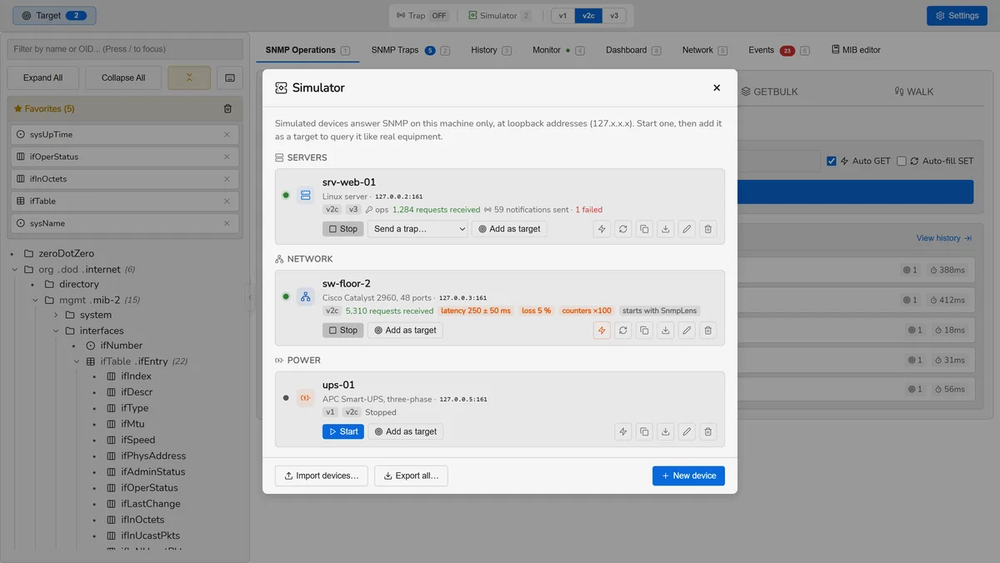
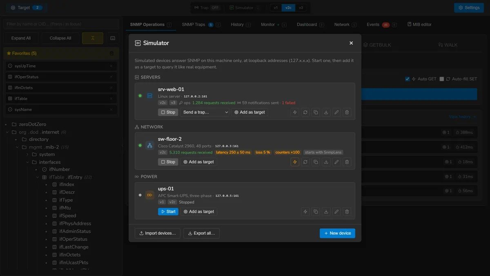
Operations
GET, SET, GETNEXT, GETBULK and WALK. Give several targets — separated by commas or newlines — and they are queried concurrently, one result block per device.
Reading the results
A walk comes back as a flat list of OIDs. When the OIDs belong to a table, the table view pivots them into columns and splits them into rows; see conceptual tables for what that involves.
Values are formatted for reading rather than for machines: TimeTicks become a
duration such as 127d 3h 46m, large counters get thousand separators,
and an OCTET STRING that is not printable is shown as hex. The raw value is always a
click away, and any cell can be copied on its own.
The filter bar above a result set accepts a regular expression and searches OIDs, resolved names, types and values at once — useful for finding one interface in a walk of two hundred.
Writing
SET writes a value with the wire type worked out from the object's base type in the MIB, not from the name of its textual convention. That distinction matters: a Gauge32, a TimeTicks and a Counter32 are not INTEGERs on the wire, and one wrong tag makes an agent refuse the request.
A SET is a write to live equipment. SnmpLens does not simulate it, ask twice, or keep an undo. Read conceptual tables before creating rows.
Comparing devices
With more than one target, results can be shown side by side with the delta and the percentage difference between them — the quick way to find the one switch whose configuration drifted.
Watching the wire
The debug panel shows the packets as they are sent and received, with a live refresh. Community strings and v3 passphrases are removed at the point the entry is written, not when it is displayed, so they are never in the buffer to begin with.


ifTable in table view — 155 varbinds, pivoted by column and split by INDEX.Versions and credentials
SNMP v1, v2c and v3 are supported everywhere, including traps and informs.
| v3 security | Supported |
|---|---|
| Authentication | MD5, SHA-1, SHA-224, SHA-256, SHA-384, SHA-512 |
| Privacy | DES, AES-128, AES-192, AES-256 |
| Levels | noAuthNoPriv, authNoPriv, authPriv |
Credentials are held by the operating system's own protection — DPAPI on Windows, the Keychain on macOS, a file readable only by your account on Linux — and are never written beside the database. The settings screen names the backend actually in use, because those three protect against genuinely different things: the first two tie the key to your account, while the Linux file keeps it away from other accounts and out of a copied profile, and nothing more.
If the protector cannot be opened — a locked keychain, a directory that cannot be written — saving a credential fails and says so. It is never silently discarded, and good ciphertext is never overwritten with a half-sealed value.


Targets and overrides
Targets can be grouped, and any one of them can override the defaults: a different version, community, port, or set of v3 credentials. That is the usual shape of a real estate, where the core switches were migrated to v3 and the rest were not.
Test connection checks reachability and credentials before you run an operation against fifty devices.


Credential profiles
A credential profile is a named set of identifiers that targets are
given instead of the defaults: a community for v1 or v2c, or an SNMPv3 user — its name,
security level, protocols and passphrases. A profile carries its SNMP version, because
“this switch speaks v3 as ops-ro” is one statement, and keeping the version
apart from the user is how a v3 user ends up sent as a v2c community.
Creating one
In Settings > SNMP, under Credential profiles, choose Community profile or SNMPv3 user. Name it, fill in the identifiers, and tick the targets that use it under Targets using this profile. Test these identifiers tries them against one of your targets first; Apply keeps the profile, and saving the settings stores it. A target that already has identifiers of its own can turn them into a profile from its overrides, with Save as a profile.
Which identifiers a target uses
Exactly one place answers, in this order:
- its profile, when it has one — a profile replaces the target's own identifiers rather than being layered under them, since two answers to “what does this target authenticate with” is one too many;
- otherwise its own overrides — a community, a version, an SNMPv3 user;
- otherwise the default identifiers, in the version chosen in the header.
Transport stays per target: the port, the timeout and the retries are never part of a profile. A request carries only the credential its version uses — a v3 target is not sent a community beside its user. A profile that is deleted sends its targets back to the defaults.
Monitoring and traps follow
A monitoring session keeps the identifiers it was started with, because it polls without the window open. When the profile they came from changes, the session is updated as the settings are saved: a rotated passphrase reaches every session built from it, with nothing to rebind. Polling several targets that do not authenticate the same way starts one session per set of identifiers, and says so.
The trap listener authenticates received SNMPv3 notifications against the default user and every SNMPv3 profile at once, except those whose Accept SNMPv3 traps from this user is unticked — a user only used to poll. The Traps tab lists who is heard, and marks a user the listener refused with its reason. v1 and v2c notifications are received whatever their community: there is nothing to accept or refuse.
Each profile's community and passphrases are sealed under the profile's ID, never its name or its place in the list, so a profile renamed, reordered or deleted while the credential store was locked gets its own ciphertext back. A profile still on MD5 or DES is flagged as using weak algorithms.
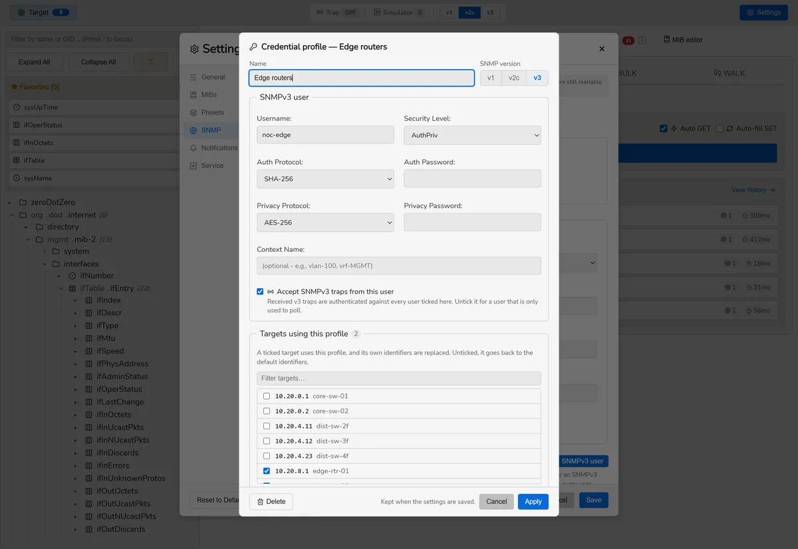
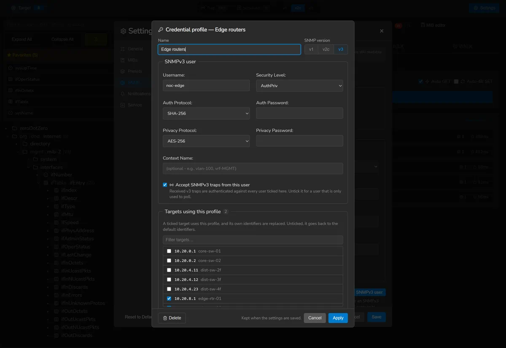
Conceptual tables
A walk is a flat list; a table is that list pivoted by column and split by INDEX. The split has to follow the MIB, because how many sub-identifiers an index object consumes depends on its SYNTAX, on whether its size is fixed, and on whether the row declares IMPLIED — RFC 2578 §7.7.
This is the difference between tcpConnTable — whose INDEX is four
objects — rendering as a local address, a local port, a remote address and a remote
port, and rendering as one opaque 10.0.0.5.161.192.168.1.9.50000 per
row. It is also why tables here sort 9 before 10 rather than after it.
Creating and deleting rows
A table is editable only if it has a RowStatus column, because RFC 2579
gives no other way to create or destroy a row.
Creating a row writes every column and the RowStatus in a single SET. RFC 3416 makes a SET atomic across its varbinds, so doing it one column at a time would ask the agent to accept a row that is incomplete at every step, and leave half of one behind when it refuses. Index columns are never written — their value is carried by the instance.
An OCTET STRING index accepts the colon-separated hexadecimal the table displays, so a MAC-keyed table can be written as well as read.


Managing MIBs
The standard SNMPv2 MIBs are compiled into the binary and extracted on first run into your configuration directory. That directory is the single source of truth afterwards: MIBs you add live beside them and are loaded the same way.
Add your own by dropping files — or whole folders — anywhere on the window. Folders are scanned recursively, duplicates are detected, and if anything fails to load you get a report naming each file and what went wrong rather than a single count.
MIBs can be switched off individually. An empty selection means none, not all — turning everything off loads nothing, rather than quietly loading the whole directory.
F5 reloads every MIB from disk without restarting.
What imports what
Settings > MIBs draws each module's imports as a tree, read from the files rather than from what happens to be loaded. A module that is imported and not in the directory is marked missing, with the symbols it was needed for — the question you actually have in front of a vendor MIB that will not load. Modules that are present but switched off are marked as such, and a cycle is marked rather than followed forever.
Why a MIB did not load
The library underneath answers “Could not load module at X” for a missing file, a PDF, a syntax error on line 412 and an unsatisfiable IMPORTS clause alike — the same sentence for four unrelated problems. SnmpLens recovers the real message and reports:
- a stage — read, content, parse, imports, build, semantic, loaded — so you know how far it got;
- the position, with an excerpt of the file and a caret under the offending token;
- the imports that cannot be satisfied, and the symbols each one was needed for;
- a dependency chain followed to its root when the failure is in something this MIB imports.
It also recognises the files people download by mistake — an HTML error page, a PDF, a zip archive, a UTF-16 file — because all four otherwise arrive as that same sentence. And it warns when a file's name does not match the module inside it, which loads perfectly and then cannot be found by anything that imports it.
A module can load and still be broken. Imports resolve lazily, so a MIB importing a module you do not have reports success and then resolves to nothing. Diagnostics are therefore offered on successes too, and a missing import stays the headline rather than the unresolved references it causes.
Working through a MIB that will not load, right now? Why a MIB will not load goes through the four causes one at a time — the file that is not a MIB, the name that does not match the module, the unsatisfiable IMPORTS, and the one that loads and is still wrong.


The MIB editor
Ctrl 7. Edits the MIBs in your configuration directory, or opens one from anywhere and saves it in.
Three kinds of checking
Because three different things can be wrong, and each is found by a different pass:
| Pass | Finds | When |
|---|---|---|
| Parser | Syntax errors, with line and column | As you type |
| Loader | Whether the module can be built at all | On demand |
| Analysis | Unknown types, duplicate OIDs, unresolved parents, missing modules in FROM, undefined INDEX objects, readable conceptual rows | On pause |
The third exists because of a measurement: a MIB declaring SYNTAX Integerr32
and assigning the same OID twice loads with no error at all, then resolves
both objects to a nil type and an empty OID with nothing anywhere saying a word.
Imports
The editor reports which symbols are used without being imported and which module each comes from, and can insert them. The fix edits the IMPORTS clause as text rather than reprinting the file, because a MIB carries comments and alignment that no printer would preserve.
Outline
Beside the editor, every definition in the file with its line, kind, syntax, access and status, and a filter. It is built from what you are typing rather than from the loaded tree, so it describes the file as it is now — and a file with a syntax error still has an outline of everything above the error. Ctrl F opens find and replace.
Safety
Editing is safe to attempt — a failed load leaves the previously loaded tree
untouched. What is not safe is succeeding at saving a broken standard MIB, since
nearly everything imports from SNMPv2-SMI and SNMPv2-TC.
So bundled MIBs are marked, backed up automatically before they are overwritten,
restorable to the shipped version, and the tree is health-checked after a reload.
Backups go to a sibling directory rather than beside the MIB, because
IF-MIB.123.bak next to IF-MIB would be loaded first as the
same module and win. Unsaved work is mirrored to a draft file, so it survives closing
the window.


Traps and informs
The listener receives v1, v2c and v3 notifications on a port you choose, resolves the trap OID through your MIBs, and can raise a native desktop notification. Received traps can be filtered and exported to CSV.
Every trap is written to the event journal before anything else happens with it. That ordering is what makes collection work with the window closed: the on-screen list is a view, the journal is the record.
Sending
Traps can be sent to test a receiver, and so can informs — the acknowledged form. The acknowledgement is reported, because it is the entire reason to send one rather than a trap.
An inform on v1 is refused, not downgraded to a trap. RFC 1157 has no InformRequest PDU, so there is nothing to send, and a caller who asked for a confirmed notification must not be told they got one.
Binding uses the bare :port wildcard, which Go opens as a dual-stack
socket, so an IPv4 and an IPv6 device reach the same listener.


Monitoring
A monitoring session polls a set of OIDs on a set of targets at an interval, stores every sample, and charts them. Sessions can be paused, resumed and deleted, and are restored when the application starts.
| View | Shows |
|---|---|
| Value | The counter or gauge as read |
| Delta | The change since the previous sample |
| Rate | Change per second, over the time that actually elapsed |
| Latency | How long the device took to answer |
Counter wraps are corrected rather than plotted as a cliff, and rates are derived from the measured interval rather than the configured one — a poll that ran late would otherwise show as a spike.
Thresholds
Each monitored OID can carry a minimum, a maximum, and a duration it must be breached for. Crossing one opens an episode; coming back closes it. Both are events, which is what makes an alert de-duplicate: a value oscillating around its threshold produces one incident, not forty.
A device that stops answering is its own kind of episode, separate from any threshold — the distinction between “this is too high” and “I cannot tell”.
When a round does not fit
A session that cannot finish a round inside its own interval is not polling at the interval it promises: the next round is already due when one ends, and the device is asked without pause. SnmpLens measures each round and, when they stop fitting, widens the period to twice the round — at most eight times the interval you asked for — and says so on the session. Keep my cadence polls at the interval you chose anyway, until the session restarts.
A round spent waiting for a device that is down does not count: that is not load, and backing off would slow down noticing that it is down. Stopping a session returns within one request timeout rather than finishing the round.


Dashboards and presets
A preset is a small JSON file describing what to poll on one kind of equipment and how to show it: a list of numeric OIDs, a cadence, and a handful of widgets. Add one to your library, bind it to a target when you add that target, and the dashboard draws itself.
Presets are meant to be shared. Nothing in one can execute, reach a field the format does not define, or name anything but a numeric OID — a preset chooses a widget from a fixed vocabulary rather than describing one, which is what makes a file from a stranger safe to open.
The library
Presets are kept in Settings > Presets. Add one by choosing a file or by dropping it on the window; open one to read what it polls, what it draws and what it will cost. Six examples are written out on first run — interfaces (IF-MIB), switch ports, Cisco equipment, a server (HOST-RESOURCES-MIB), a UPS (RFC 1628), and a 24-port switch drawn as its front panel. Delete one and it stays deleted.
Binding one to an equipment
A preset is bound in the target manager: choose it when you add an equipment, or use
Bind on one that is already there. Detect asks the
equipment what it is — its sysObjectID — and puts the presets written for
it first. That is advice, not a filter: every preset stays in the list.
Binding creates one monitoring session for that one equipment and starts it at once, with the credentials that equipment uses — its own overrides where it has them.
What it costs, before it runs
Binding a preset makes SnmpLens send SNMP traffic to your equipment, so the library states the cost first: how many OIDs, at what cadence, and how many requests and values a day that comes to. Those are counts and not a duration — how long a round takes depends on the device and the link, and that is measured rather than guessed.
It also says how many readings carry a threshold, and how many of those can raise an incident — the one thing a preset can do that reaches beyond your equipment, since an incident goes wherever your own rules send it.
A preset that discovers its instances cannot know how many the equipment has, so its figures are stated as a ceiling — at most — until it is bound. And if a round stops fitting inside the cadence the preset asked for, the poll clock widens the period and says so rather than asking the device without pause.
The widgets
Six kinds, and no seventh: the latest reading, a per-second rate, a chart over time, a state tile, a grid of states — a switch's port panel, where forty-eight readings are one thing to look at rather than forty-eight things — and a map.
A map is a drawing whose parts are readings: boxes, lines, labels and dots placed as percentages of the widget, each one optionally bound to an OID and coloured by what that reading is actually doing. Drop a photograph of your own rack into Settings > Presets and a preset can draw over it by name — the picture stays on your machine, and the preset never carries one.
Deliberately not SVG. An <svg> is a document with
script in it, and a preset is a file somebody else wrote: there is no version of
"mostly safe SVG" worth rendering in an application that talks to your network. The
four shapes are a vocabulary SnmpLens owns, so a preset picks from it and cannot
describe anything of its own. A background is checked by decoding it rather
than by its name, and only PNG, JPEG and GIF get in.
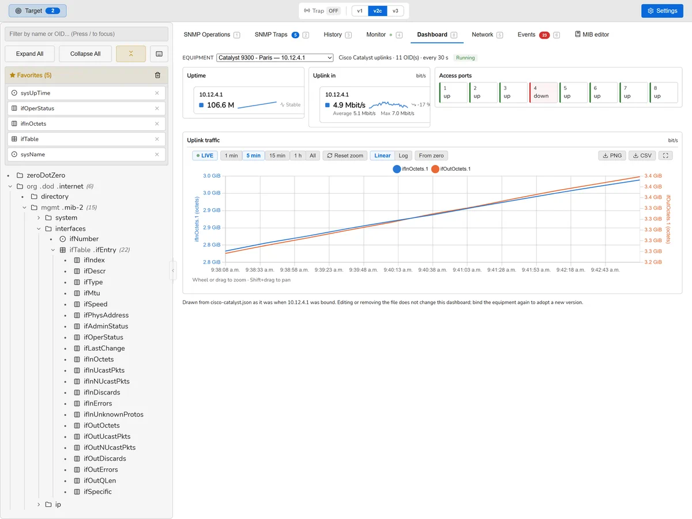
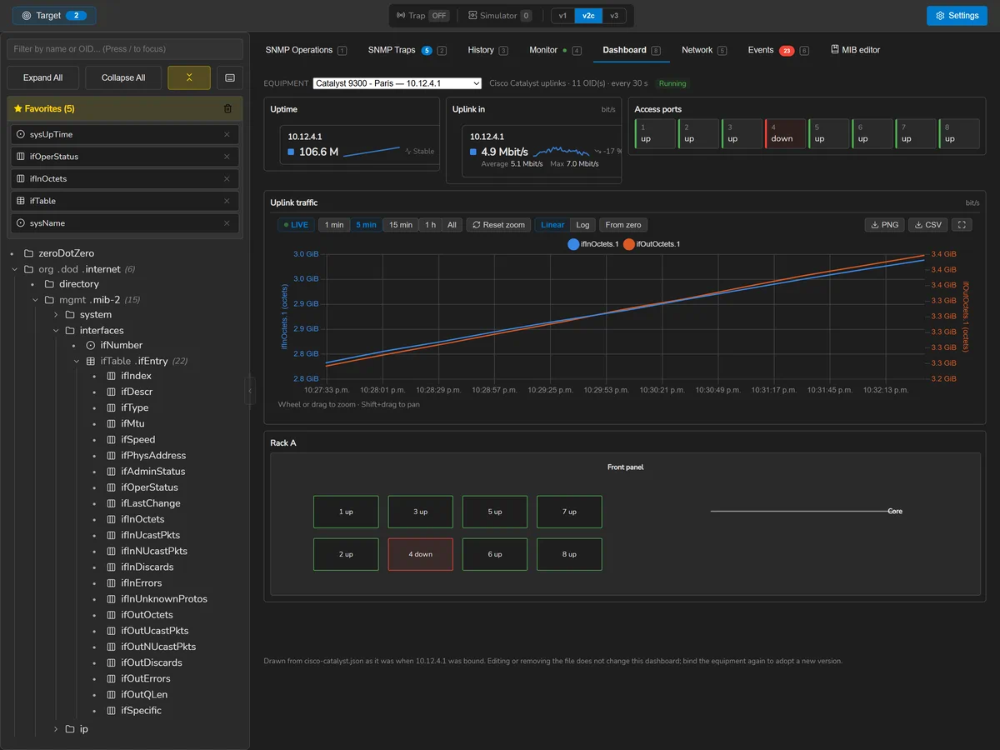
Discovery
A preset written for a 24-port switch used to be a preset for exactly one shape of
switch. So a widget can say where its instances come from instead of listing
them: its OIDs carry {#} where the instance goes, and it names a column to
walk — usually ifDescr. The walk happens once, when the preset is bound;
what is stored afterwards is an ordinary list of OIDs, so polling stays plain GETs.
The walked column also names the instances, which is why a discovered port reads
Gi0/1 rather than 8. If the walk fails — the wrong community,
or an access list on that column — the bind is refused and the message names the
column, rather than producing a dashboard that polls nothing.
Layout
A preset can place each widget on a twelve-column grid — which divides into halves, thirds and quarters — so the port wall goes across the top and the two uplink counters side by side under it. Widgets it does not place find room on their own. Below 900 pixels the grid collapses to one column, in the order the author laid it out: top to bottom, then left to right.
Thresholds
A widget can carry a band — a minimum, a maximum, and how long it must be left for — and binding the preset fills it in on the monitoring session, exactly as if you had typed it. From then on it is yours to edit. A preset for a UPS knows that running on battery is worth hearing about; the person binding it should not have to work that out.
Several equipments on one dashboard
Bind the same preset to eight access switches and you get eight sessions — one per equipment, because the cost is stated per equipment, the credentials are per equipment, and one slow device must never slow the healthy ones down with it. The dashboard can still draw them together: the equipment picker offers the whole group, and every widget then speaks for all of them.
The two switches below were bound from one file and are not the same size — one has eight ports and the other six, because each was discovered when it was bound. The port wall keeps them apart; the chart names each series by its equipment.
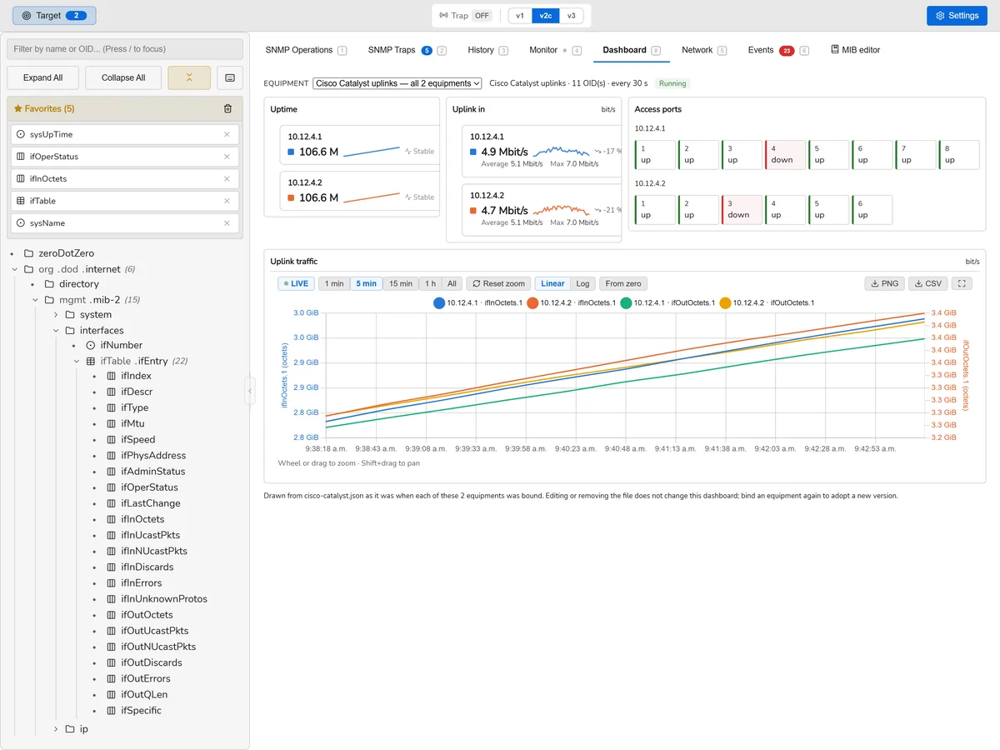
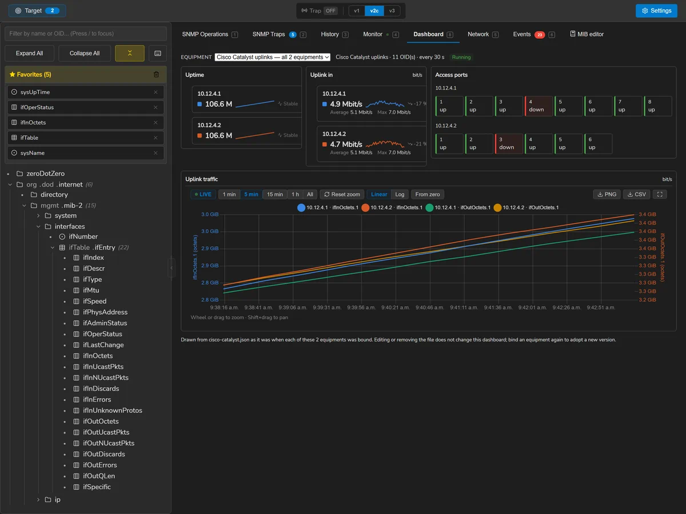
A snapshot, not a link
What a bound dashboard draws is the preset as it was when you bound it. Editing the file afterwards changes nothing already bound and deleting it stops nothing; binding the equipment again is how a new version is adopted. The page says so underneath itself, because the opposite is what most people would assume.
Presets live beside your MIBs, in %APPDATA%\SnmpLens\presets\ on Windows
and ~/.config/SnmpLens/presets/ elsewhere. A preset with problems is kept
and listed with them rather than refused — you cannot fix a file you were not allowed
to keep — but it cannot be bound until they are fixed.
Writing a preset
A preset is one JSON file. This one watches an access switch: two counters on the left, a wall of its ports — discovered when it is bound — beside them, and the uplink traffic across the bottom.
{
"formatVersion": 1,
"name": "Access switch",
"author": "you",
"description": "Port states and uplink traffic. The ports are discovered when you bind it.",
"match": { "vendor": "Cisco", "sysObjectIdPrefix": ["1.3.6.1.4.1.9"] },
"intervalSec": 60,
"widgets": [
{ "kind": "value", "title": "Uptime", "oids": ["1.3.6.1.2.1.1.3.0"],
"layout": { "x": 0, "y": 0, "w": 3 } },
{ "kind": "value", "title": "Interfaces", "oids": ["1.3.6.1.2.1.2.1.0"],
"layout": { "x": 0, "y": 1, "w": 3 } },
{ "kind": "grid", "title": "Ports",
"oids": ["1.3.6.1.2.1.2.2.1.8.{#}"],
"discover": { "walk": "1.3.6.1.2.1.2.2.1.2" },
"labels": { "1": "up", "2": "down" },
"layout": { "x": 3, "y": 0, "w": 9, "h": 2 } },
{ "kind": "chart", "title": "Uplink traffic", "unit": "bit/s",
"oids": ["1.3.6.1.2.1.2.2.1.10.1", "1.3.6.1.2.1.2.2.1.16.1"],
"layout": { "x": 0, "y": 2, "w": 12, "h": 2 } }
]
}| Field | Required | What it is |
|---|---|---|
formatVersion | yes | Always 1. A file from a newer version is refused with a sentence rather than misread |
name | yes | What the library shows, up to 120 characters |
author, description | no | The description can run to 600 characters |
match | no | vendor and sysObjectIdPrefix: the equipment it is written for, which Detect uses to put it first |
intervalSec | yes | How often to poll, from 5 to 86400 seconds |
widgets | yes | From 1 to 40 of them |
Widgets
| Field | What it is |
|---|---|
kind | One of the six below |
title, unit | What the widget is called, and what its readings are in — bit/s, % |
oids | Numeric OIDs, never names — at most 500 across the whole preset |
labels | A state number to a word, for status, grid and map: {"1": "up", "2": "down"} |
discover | walk, the column to walk, and optionally max; the OIDs then carry {#} |
layout | x 0–11, y 0–64, w 1–12 and h 1–12, in grid cells; h defaults to 1 |
threshold | min, max, forSeconds and alertEnabled — see below |
map | The drawing, for a map widget only — see below |
| Kind | Draws | Readings |
|---|---|---|
value | The latest reading | 1 |
rate | A counter's per-second rate, corrected for wraps | 1 |
chart | Readings over time | 8 |
status | One reading as a state, named by the labels | 1 |
grid | One cell per reading — a switch's port panel | 96 |
map | A drawing whose shapes are readings | 96 |
A discovering widget takes at most 128 instances, or as many as its kind can draw, whichever is smaller — so a chart discovering an in and an out counter shows four ports, not forty-eight.
A layout that runs past the twelfth column, or two widgets placed on the same cells, is refused: the browser would quietly grow a thirteenth column in the first case and hide one widget under the other in the second.
Thresholds
{ "kind": "status", "title": "Battery",
"oids": ["1.3.6.1.2.1.33.1.2.1.0"],
"labels": { "1": "unknown", "2": "normal", "3": "low", "4": "depleted" },
"threshold": { "max": 2 } }{ "kind": "value", "title": "Charge", "unit": "%",
"oids": ["1.3.6.1.2.1.33.1.2.4.0"],
"threshold": { "min": 30, "forSeconds": 300 } }
The first is true on the first sample; the second has to hold for five minutes, so a
UPS self-test does not raise anything. A band with alertEnabled left out is
evaluated; set to false, it is only drawn on the chart as a reference line.
A band cannot go on a rate widget — it is compared against the raw reading,
and a counter only goes up — and a reading can carry only one band.
Maps
{ "kind": "map", "title": "Front panel",
"oids": ["1.3.6.1.2.1.2.2.1.8.1", "1.3.6.1.2.1.2.2.1.8.2"],
"labels": { "1": "up", "2": "down" },
"map": {
"background": "rack-a.png",
"aspect": 6,
"shapes": [
{ "type": "rect", "x": 5, "y": 30, "w": 10, "h": 40,
"oid": "1.3.6.1.2.1.2.2.1.8.1", "text": "1" },
{ "type": "rect", "x": 17, "y": 30, "w": 10, "h": 40,
"oid": "1.3.6.1.2.1.2.2.1.8.2", "text": "2" },
{ "type": "line", "x": 27, "y": 50, "x2": 60, "y2": 50 },
{ "type": "label", "x": 70, "y": 50, "text": "Core" }
]
} }| Shape | Fields |
|---|---|
rect | x, y for its top left, w and h for its size |
line | From x, y to x2, y2 |
label | x, y and the text, centred on the point |
dot | x, y — a marker for something too small to draw |
Every coordinate is a percentage of the drawing, from its top left, between 0 and 100,
and nothing may run off its edge. Any shape can take an oid — one of the
widget's own — to be coloured by that reading, and text to be labelled. A
drawing holds up to 200 shapes. aspect is its width over its height, from
0.2 to 12, sixteen by nine when left out: a rack front panel wants about eight to one.
background is a file name, never a path. The file itself is added in
Settings > Presets — PNG, JPEG or GIF, up to 4 MiB — and a map whose
background is missing still draws its shapes.
A preset file is at most 1 MiB. Its problems are listed in the library with the
path to each field — widgets[2].layout — so they can be found.
Running in the background
The poll clock lives in the Go backend, one scheduler per session, so closing the window does not stop monitoring. Optionally SnmpLens can keep running in the system tray and start with your session — a per-user login entry, never machine-wide, so it never needs elevation.
The tray is fail-soft on purpose: a desktop with no status-notifier host never calls back rather than returning an error, so the decision about whether closing the window should quit is taken after the tray has answered, not before. An application that refuses to close with no tray to quit from is unusable.
The event journal
Ctrl 6. One list for everything worth remembering, whatever produced it:
- Traps received, with their varbinds;
- Thresholds opened and resolved;
- Reachability — a device stopped or resumed answering;
- Operations worth auditing, such as a failed SET;
- System — a notification that could not be delivered, an update, a MIB reload.
Events are stored with a translation key and their parameters rather than a finished sentence, so an event recorded a year ago still reads correctly in a language added since. Retention is per category, because traps arrive in bursts while system events trickle, and one shared limit would let a trap storm evict everything else.


Rules
A rule decides which events reach which destinations. It can match on category, kind, severity, session, state, source, OID prefix, a substring of the summary, and quiet hours. An empty field matches everything.
| Field | Notes |
|---|---|
| Source | An address, a CIDR range, a glob such as sw-*, or a literal hostname. 0.0.0.0/0 and ::/0 both mean every device, of either family. A pattern that cannot match anything is refused when you save it. |
| OID prefix | Matched by sub-identifier, not by text — 1.3.6.1.2.1.2 is interfaces and does not match 1.3.6.1.2.1.25, which is a different subtree that merely starts with the same characters. |
| Quiet hours | A window in which the rule does not match, so nothing is delivered. Evaluated against the time the event happened. |
| Priority | Rules are evaluated in ascending order; 0 is first. Combined with stop, this decides which destinations an event reaches at all. |
Destinations
Syslog
RFC 5424 messages over UDP, TCP, or TLS per RFC 5425. Mutual TLS is supported; the client certificate lives with the configuration and its private key with the other credentials.
Webhook
POST, PUT or PATCH with custom headers. Sends either the SnmpLens envelope or whatever your template renders, which is how you talk to Slack, Teams or Alertmanager.
SMTP with implicit TLS or STARTTLS, AUTH PLAIN or LOGIN. Credentials are never sent before the connection is encrypted.
All three accept a CA certificate in PEM, so an internal collector or relay can be trusted without turning verification off — the alternative pushes people towards the insecure option for the exact situation that has a secure answer.
Credentials in a destination
Each destination has one secret: the SMTP password, the webhook bearer token, or the syslog client private key. It is held by the operating system's protection, never written with the configuration.
A custom header value or the URL may contain {{secret}} to draw
on it. The URL matters most: Slack, Teams and Discord authenticate by the URL alone,
so without this the address — which is the credential — would sit in the
database in the clear.
A webhook does not follow redirects, deliberately. Go rewrites a redirected POST as a GET and drops the body, so a receiver behind a 302 would answer 200 having been sent nothing — and the delivery would be recorded as successful.


Message templates
A destination can carry its own subject and body template, over a fixed vocabulary:
{{variable}}, {{variable|default}} and
{{#variable}}…{{/variable}} for a section that only appears when the
variable has a value. The settings screen lists every variable available.
It is deliberately not a general template language. A fixed vocabulary can be listed, validated when you save, and cannot reach a field nobody chose to expose.
Two rules carry the safety. Substituted text is never re-scanned, so
a trap OID that happens to read {{secret}} comes out as those characters.
And masking is applied to the event before templating, because a template can
name fields the built-in rendering never showed.
For a webhook whose payload is the template, substituted values are escaped as JSON string fragments while your own punctuation is left alone — a trap arrives from the network unauthenticated, and one quote in its OID would otherwise turn a hand-written payload into a different document. The result is checked with a JSON parser before it is sent, and when you save, against a sample of each kind of event.
The preview renders through the same path the destination uses, so what is on screen is what will be posted, with its size and its parse result.
Delivery and retries
Nothing is sent from the screen. A matched event is queued in a durable outbox and sent by a background worker, so a slow relay can never stall a trap listener, and a notification survives the window being closed.
A failure is retried with exponential backoff, up to six attempts. Whether it is retried at all is decided by the protocol reply code and never by the text a receiver wrote: RFC 5321 makes an SMTP 4yz transient and a 5yz permanent, and an HTTP 408, 425 or 429 asks to be tried again while other 4xx codes will never be accepted. An error carrying no code is retried, because six attempts cost half an hour of backoff while discarding one loses the incident.
A delivery finally given up on becomes a dead letter. It is kept, not deleted, because it is the only record that a notification never arrived — and it is listed with the relay's own error and a button to try again. Successful deliveries are trimmed after two weeks; pending and dead ones never are.
One unreachable destination does not delay the others: deliveries run in parallel across destinations and in series within one, because twenty simultaneous SMTP conversations with one relay is how a sender gets blocked.
Simulated devices
The Simulator in the header runs SNMP agents on your own machine: devices answering v1, v2c and v3 — the whole USM, discovery, reports and time windows included — from a catalogue of fourteen models or from models of your own. Each answers a whole agent's walk — IF-MIB, IP, TCP, UDP, ENTITY, BRIDGE, LLDP, HOST-RESOURCES, UCD and the vendor's own MIBs — built from one description of the device, so that they agree with each other the way a real agent's do, with counters that move and wrap.
A simulated device answers on a loopback address only,
127.x.x.x or ::1. That is a rule of the backend, checked when a
device is saved and again on the socket it actually binds — not a default of the form,
since a bench file is JSON somebody else may have written. Where it sends
notifications may be anywhere.
The list groups the devices by category. A device is started and stopped,
restarted — uptime and counters from zero, and coldStart if
it sends one —, duplicated, made to send any of its notifications on the
spot, and added as a target in one click, with its port and the
identifiers of the most secure version it answers. Nothing starts by itself at launch
unless a device is set to start with SnmpLens.
The editor
Five tabs, and a tab holding something to fix is marked with a dot:
- Device — the model, the name (its sysName), the address and the port, its own sysLocation and sysContact, and whether it starts with SnmpLens. A saved device shows its engine ID, given once and never changed: managers localise their SNMPv3 keys to it.
- Access — the versions it answers, its read and write communities, and its SNMPv3 users.
- Notifications — where it sends traps and INFORMs, and when.
- Data — the model's size, values of its own, and a preview of everything it answers.
- Faults — what it is made to do wrong, applied at once to a saved device.
A running device that is saved restarts, so it answers as configured. Its communities
and passphrases are kept in the system's credential store, never in
simulator.json; in the editor they are masked, and the eye beside each shows
it — except in Anonymous Mode.
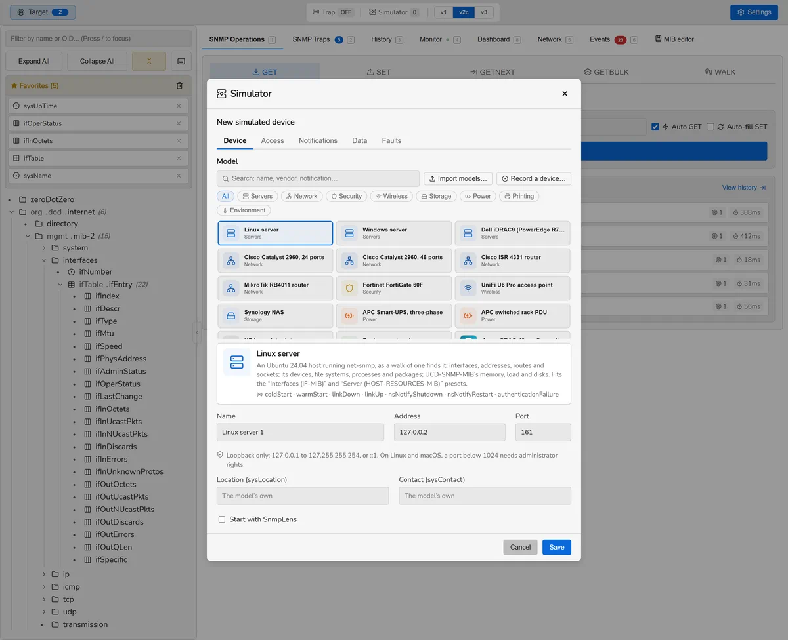
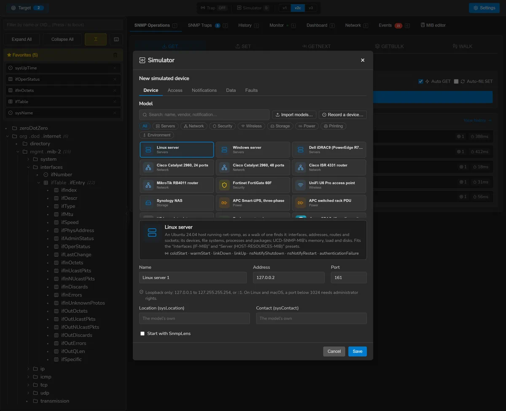
Who may read, and who may write
v1 and v2c read with the community. Give the device a write community as well and a SET with it changes what the device answers; an SNMPv3 user writes when Can write (SET) is ticked. What is written holds until the device restarts, as a running configuration does until it is saved.
Every varbind is checked before any is applied, so a SET is applied whole or not at all.
An instance nothing answered is created where one can sit, and a table row is created
and destroyed through its RowStatus — createAndGo,
createAndWait, destroy — as the MIBs loaded in SnmpLens
describe it, so the row editor works against a simulated device as
it does against a real one. A manager that only reads is answered
noAccess, and the agent's own counters, engine and users are never written.
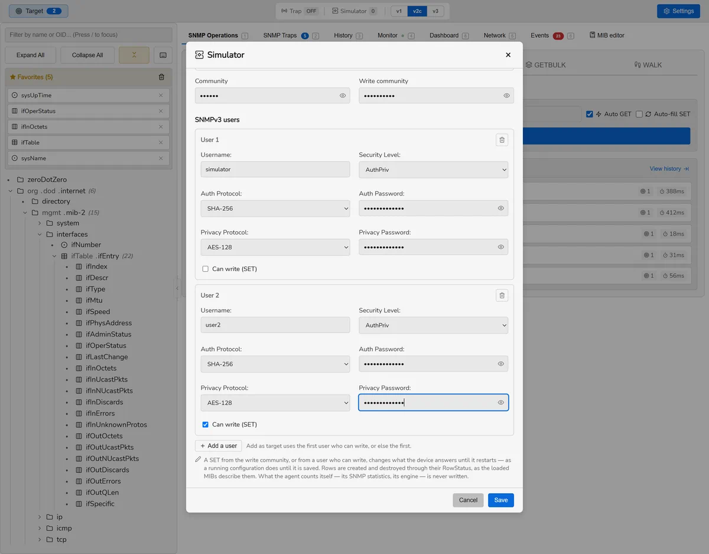
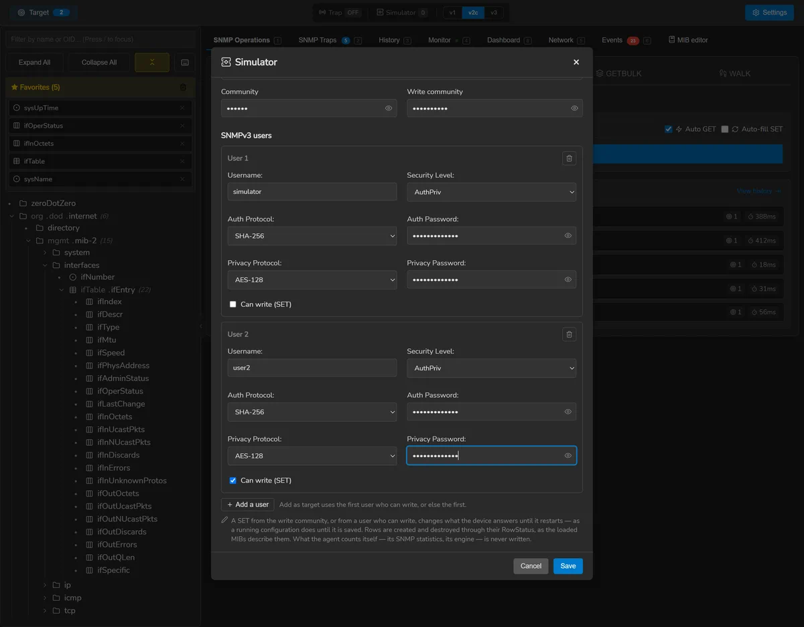
What it sends
Up to eight destinations, in v1, v2c or v3, as traps or acknowledged INFORMs: when the device starts, when a request is refused, on schedules — a named notification or any at random, regular or not — and on request from the list. A new destination is SnmpLens on this machine, at the trap listener's port. An SNMPv3 INFORM needs the receiver's engine ID, and the editor fills in SnmpLens's own. A device sends twenty notifications a second at most, so a flood of refused requests cannot become a flood on the network.
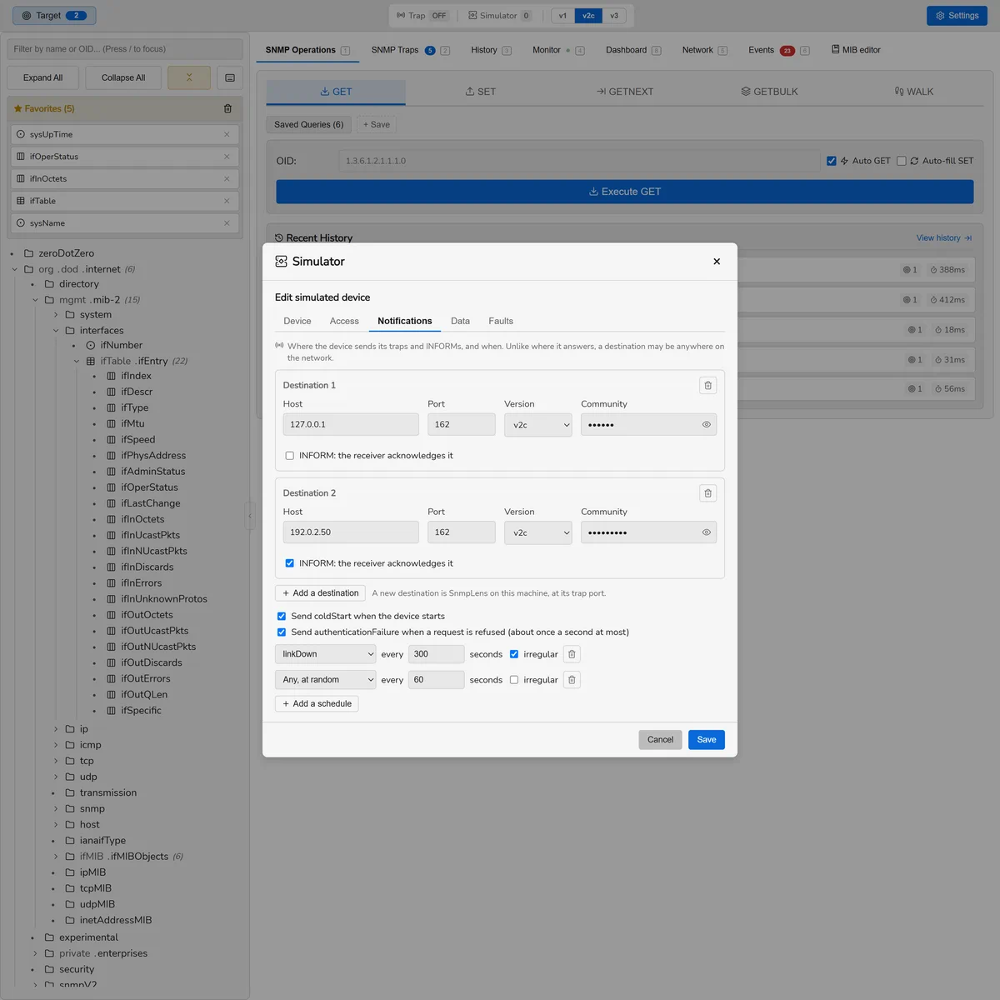
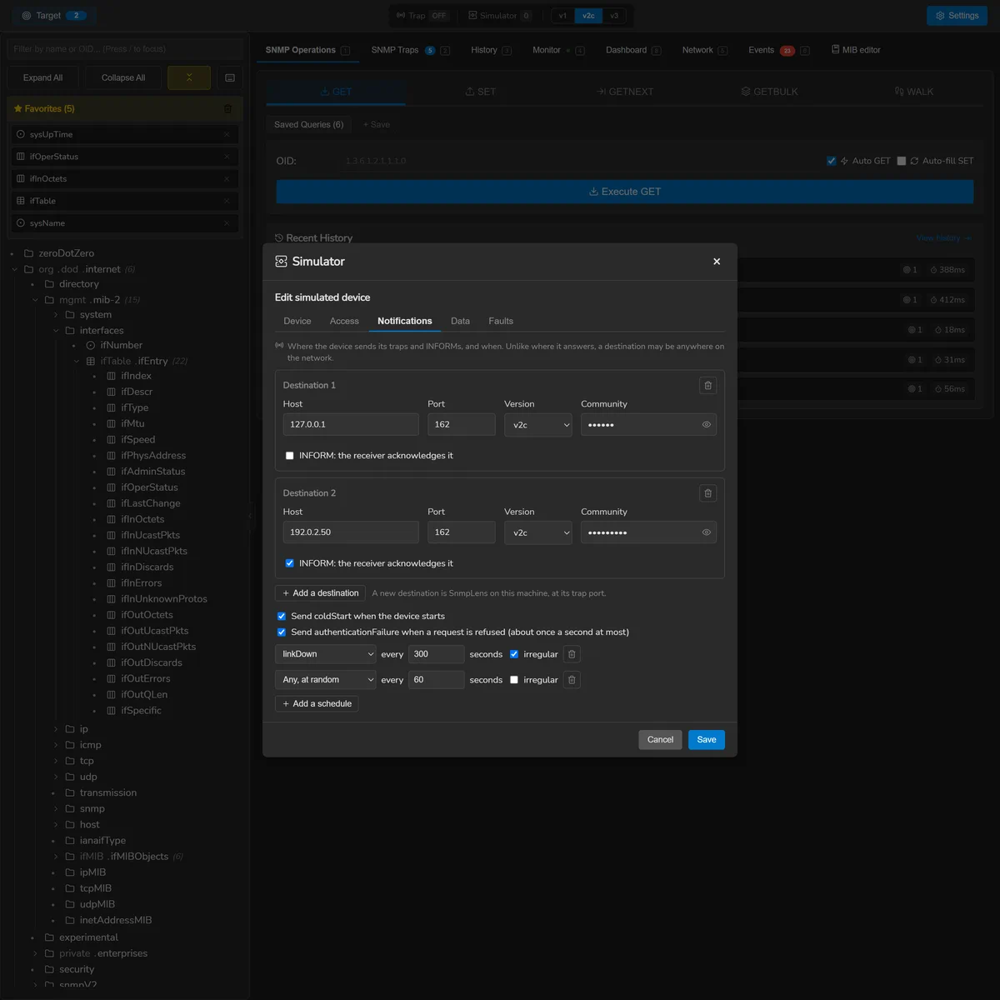
Faults
The lightning button in the list, or the Faults tab, makes a device
misbehave while it runs, without restarting it — its uptime and counters are what a fault
is tested against: a latency with jitter, a share of requests lost, a device that answers
nothing (and still sends its notifications), a share answered with genErr or
tooBig, and counters running 10, 100 or 1000 times faster, so that a
Counter32 wraps in minutes. They are what the reachability alerts, the
overload guardrail and the counter-wrap arithmetic are tested
against, and they are kept with the device.
Shaping its data
Some models take a size: the Catalyst's ports — 2 up to 24 or 48, its uplinks keeping their index so that its notifications still name them —, the Synology's disks (1 to 9), the rack PDU's outlets (8 to 24) and the Linux server's processors (1 to 64). Any device takes values of its own, OID by OID, in the types a model file uses: each takes the place of the model's object at its OID, or adds an instance the model does not have. One that would sit under another instance is refused when the device is saved.
The preview shows what the device would answer, from the settings on
screen — saved or not —, read as if it had run since the tab was opened and read again
every five seconds, so that what moves is seen moving. Each row says how its value
behaves — static, counter, gauge, uptime, clock, computed — and can be narrowed to what
moves. Each object is named from the loaded MIBs, IF-MIB::ifDescr.3, and the
filter takes an OID subtree or a name. The columns keep the width they are dragged to, or
stepped to with the arrow keys.
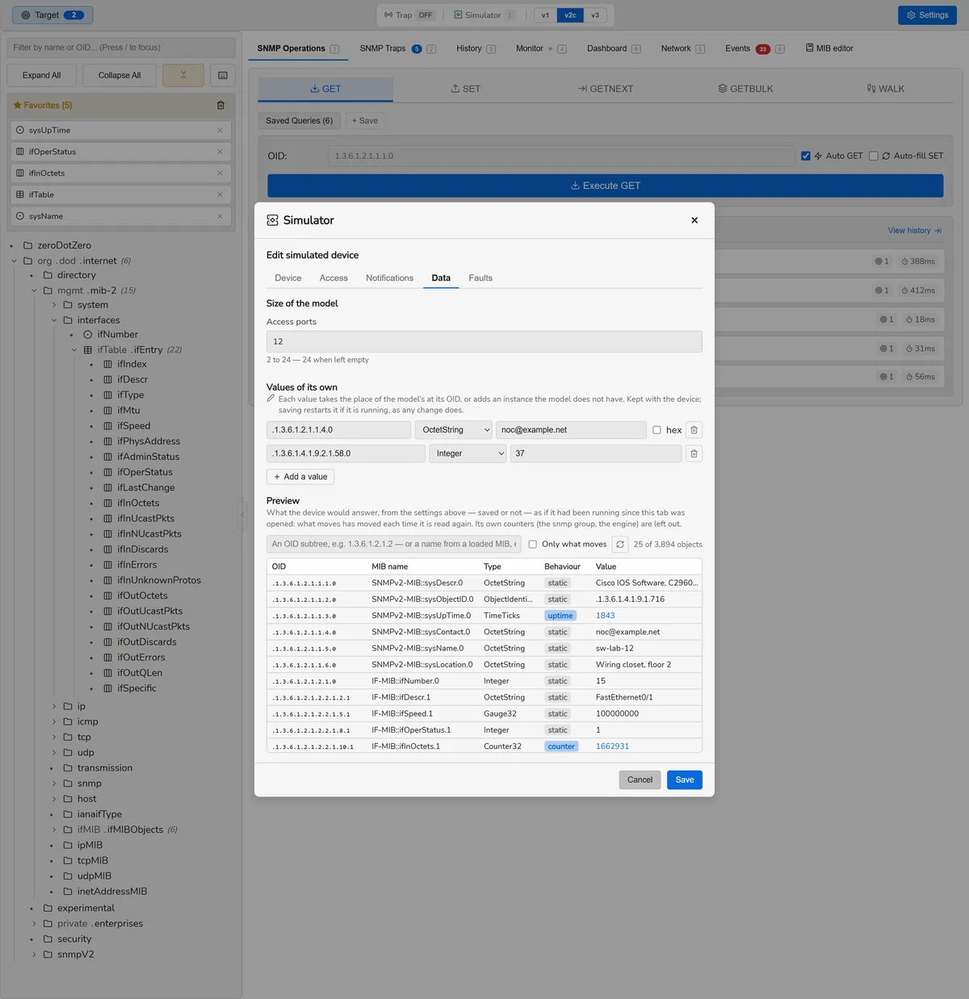
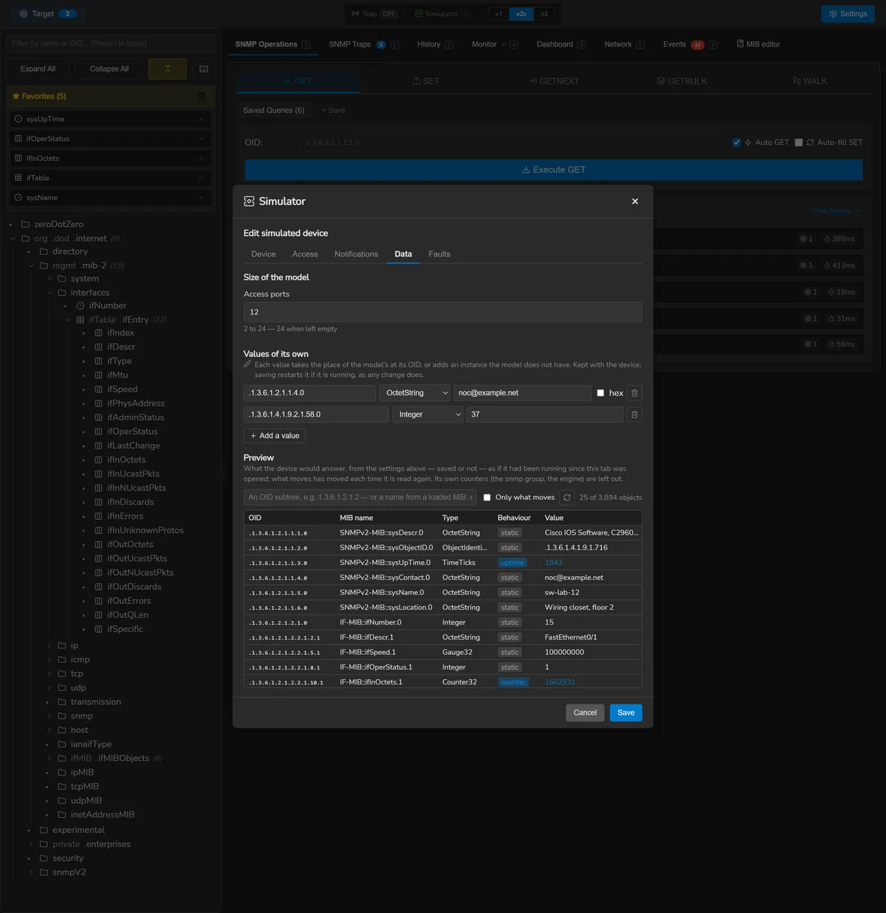
A bench as a file
Export all…, or a device's own export button, writes the devices as
JSON, and asks every time whether to put their passwords in: the file then says which,
with "secrets": "included" or "omitted". Import
devices… makes each device new on this machine — its own ID and engine, and
another address when its own is taken. A device that cannot be made here, of a custom
model that is not installed say, is refused on its own; devices imported without their
passwords start once they are given them in the editor.
Writing a simulator model
The catalogue can be extended with models of your own: a JSON file saying what a device answers, imported from the model picker with Import models… on its own, or in a ZIP that also carries the model's icon — PNG, JPEG or GIF, up to 512 × 512 pixels. An archive may hold several models, and a model imported again replaces the one kept and restarts the devices made from it.
{
"kind": "snmplens-simulator-model",
"formatVersion": 1,
"id": "acme-crac",
"name": "Acme CRAC-40 cooling unit",
"vendor": "Acme",
"category": "environment",
"icon": "acme-crac.png",
"system": { "descr": "Acme CRAC-40 controller, firmware 3.2.1", "objectId": "1.3.6.1.4.1.32473.1.40" },
"interfaces": [{ "descr": "eth0", "speedMbps": 100, "up": true, "inOctetsPerSec": 400, "outOctetsPerSec": 900 }],
"objects": [
{ "oid": "1.3.6.1.4.1.32473.2.2.1.1.{#}", "instances": [1, 2, 3], "type": "Integer32", "value": "{#}" },
{ "oid": "1.3.6.1.4.1.32473.2.2.1.2.{#}", "instances": [1, 2, 3], "type": "OctetString", "value": "Sensor {#}" },
{ "oid": "1.3.6.1.4.1.32473.2.2.1.3.{#}", "instances": [1, 2, 3], "type": "Integer32", "gauge": { "min": 180, "max": 260 } },
{ "oid": "1.3.6.1.4.1.32473.2.4.0", "type": "Counter64", "counter": { "perSecond": 1, "start": 31536000 } },
{ "oid": "1.3.6.1.4.1.32473.3.1.0", "type": "OctetString", "value": "Return air above 27 °C", "notifyOnly": true }
],
"notifications": [
{ "name": "acmeHighTemperature", "oid": "1.3.6.1.4.1.32473.0.1",
"objects": ["1.3.6.1.4.1.32473.2.2.1.3.2", "1.3.6.1.4.1.32473.3.1.0"] }
]
}| Field | What it says |
|---|---|
id | Lower-case letters, digits and hyphens; the model is listed as custom:<id>, so it can never take a built-in model's place |
category | server, network, security, wireless, storage, power, printing, environment or other |
icon | A file in the same ZIP; a model imported alone keeps the icon it already had |
system | descr and objectId (sysDescr, sysObjectID) are required; contact, location and services are not. sysName is the device's own name |
interfaces | IF-MIB's tables: descr, name, alias, type (IANAifType), mtu, speedMbps, up, adminDown, and the rates inOctetsPerSec, outOctetsPerSec, errorsPerSec the counters move at |
objects[].type | Integer32, OctetString, ObjectIdentifier, IpAddress, Counter32, Gauge32, Unsigned32, TimeTicks, Counter64, Opaque |
| behaviour | Exactly one of value, hex (octets), uptime, secondsUp, gauge (min, max, periodSec) and counter (perSecond, start, swing, periodSec) |
instances | A table's rows: {#} in the OID — and in a string value — becomes each; "value": "{#}" is the row's own index |
notifyOnly | An accessible-for-notify object: carried by notifications, never answered to a request |
notifications | The model's own, beside coldStart, warmStart and authenticationFailure, which every device sends |
A file is read the way a preset is: what it says it is first, then all of it, strictly —
a field the format does not define is refused rather than ignored, since a misspelt
vaule would otherwise be an object with no value. The model is then built
once, so an OID given twice, one under another, or a value its type cannot carry is
refused at import, naming the field or the OID. Some OIDs are the agent's own and no
model may answer them: SNMPv2-MIB's snmp group on every device, and for SNMPv3
snmpEngine, the MPD and USM statistics — read live from what the agent counts as it
answers.
The example is pkg/simulator/testdata/custom-model.json in the repository;
32473 is the enterprise number RFC 5612 reserves for documentation.
Packages and recordings
A model can also be spread over the files of one folder — a package — so that each file says one thing, and so that a device can answer what a real one answered, recorded:
acme-gateway/
├── model.json what the device is: the format above, "system" optional once a walk records one
├── oids.json objects, as { "objects": [ … ] } — or several files in oids/
├── traps.json notifications, as { "notifications": [ … ] }
├── walks/ what a real device answered: snmpsim .snmprec, or snmpwalk -On output
│ └── gateway.snmprec
└── acme-gateway.png the icon model.json names
Zip the folder and import it; one archive may hold several packages and lone models.
Record a walk with snmpwalk -v2c -c public -On -Ox <host> .1.3.6.1 — and
.1.0.8802 if the device answers LLDP — or with snmpsim's recorder:
-On keeps the OIDs numeric, and -Ox keeps an OCTET STRING's
octets rather than the text a DISPLAY-HINT makes of them.
- What is written wins over what was recorded, OID by OID — which is
how a recorded constant is made to move, or a recorded value corrected. When
model.jsongivesinterfaces, IF-MIB is made from them and the walks' own is left out. - The agent's own objects stay behind. The snmp group and everything
under
1.3.6.1.6.3— the recorded device's engine, USM users, VACM groups and community strings — are never served, and the import says how many were left out. - The system group is made, never replayed. sysName is the simulated
device's name and sysUpTime its own uptime; the rest is what the walks recorded, unless
model.jsonsays otherwise. - Recorded counters move, each from the value recorded at the rate it had averaged since the device booted, swinging around it as traffic does.
Recording a device
Record a device… in the model picker walks a real device — with the
identifiers its target uses — and keeps what it answered as a package: a model like any
other, from which a simulated device answers what the real one did. The recorded agent's
own subtree, with its user names and community table, is never written. A recording can
be stopped, and then keeps nothing. Export, beside a custom model, writes
it back out as a package folder with its icon — which is how a recording is edited: add an
oids.json beside its walk, or a traps.json, and import it again.
A walk is at most 16 MB, and a package's walks record at most 65 536 objects between them. A line of a walk that cannot be read is left out and counted, and the import says where the first one was.
Discovery and network tools
Ctrl 5. Sweep a CIDR range for devices that answer SNMP with the credentials you gave, then ping or traceroute any of them. Both tools are pure Go and need no elevated privileges.
Scans are capped by host count. The prefix sizes the work before a single packet is
sent, so 10.0.0.0/8 is refused rather than attempted — and an IPv6
/64 would never have finished expanding at all.
On macOS, an IPv6 traceroute runs traceroute6, because the system
traceroute there is IPv4-only.


Privacy
Anonymous Mode (Ctrl Shift A) replaces everything
identifying on screen with a stable alias: addresses become Device-1,
Device-2 and so on, consistently for the rest of the session, so a
screenshot still makes sense. It covers addresses in free text as well as in columns —
summaries, tooltips, trap sources, debug output — and handles IPv6, which is the case a
screenshot is most likely to leak.
It is always off at startup, deliberately. A privacy mode that persists is a mode that eventually hides something you needed to see without your remembering you turned it on.
It is a display mask, not encryption: the underlying data is unchanged, and an export contains real values.
Files and configuration
Settings are in the application (Ctrl ,). What lands on disk:
| Platform | Directory |
|---|---|
| Windows | %APPDATA%\SnmpLens\ |
| macOS | ~/.config/SnmpLens/ |
| Linux | ~/.config/SnmpLens/ |
| Item | What it is |
|---|---|
mibs/ | The bundled MIBs, extracted on first run, plus everything you added |
mib-backups/ | Automatic backups taken before a bundled MIB is overwritten |
mib-drafts/ | Unsaved editor buffers, so they survive closing the window |
presets/ | Dashboard presets, the six examples included |
assets/ | The map backgrounds you added |
monitoring.db | SQLite: history, events, sessions, rules, destinations, the outbox |
service.json | The few preferences that must be read before the window exists |
simulator.json | The simulated devices — their communities and passphrases are in the credential store |
simulator-models/ | Custom simulator models and packages, and their icons |
Credentials are not in any of these. They are held by the operating system's own protection, under a reference the database stores.
Keyboard shortcuts
| Keys | Action |
|---|---|
| Ctrl 1 | Operations |
| Ctrl 2 | Traps |
| Ctrl 3 | History |
| Ctrl 4 | Monitor |
| Ctrl 5 | Discovery |
| Ctrl 6 | Events |
| Ctrl 7 | MIB editor |
| Ctrl 8 | Dashboard |
| Ctrl , | Settings |
| Ctrl B | Show or hide the MIB panel |
| Ctrl Shift A | Toggle Anonymous Mode |
| Ctrl F | Find and replace, in the MIB editor |
| F5 | Reload MIBs from disk |
| Esc | Close the open dialog |
On macOS these use the Control key, not Command — except find and replace in the MIB editor, which accepts either.
Troubleshooting
A device does not answer
Check the version first — a v2c request to a v1-only agent is simply ignored, with no error to report. Then the community or v3 credentials, then the port, then whether anything between you and the device filters UDP 161. Test connection on the target distinguishes these faster than a walk does.
A MIB will not load
Open the MIB list and use Diagnose, which reports the stage that failed — read, content, parse, imports, build or semantic — with the line and column. See Why a MIB did not load. The commonest causes, in order: the file is an HTML error page rather than a MIB, it imports a module you do not have, or its filename does not match the module name inside it.
An OID shows the wrong name
A lookup for an unknown OID returns the nearest ancestor rather than failing, so a badly-resolved OID looks like a shallow one. If a name looks wrong, the MIB defining it is probably not loaded.
An alert never arrived
Look at the delivery log in Settings. Every attempt is there with the relay's own error, and a dead letter is kept precisely so this question has an answer. If nothing was ever queued, the rule did not match — check its source pattern and OID prefix, and that the destination is switched on.
Traps are not being received
The listener defaults to 162, and what stops it binding differs by platform.
On Windows there is no privileged-port rule: 162 binds without
elevation, so a failure means something else holds it — the built-in SNMP Trap
service, if it is installed — or the port falls in a reserved range, which
netsh int ipv4 show excludedportrange udp lists. On
Linux and macOS, ports below 1024 do need privileges the
application deliberately never asks for, so the bind fails with permission
denied: either grant the binary the capability once with
sudo setcap 'cap_net_bind_service=+ep' /path/to/SnmpLens on Linux, or
set the port to 1162 in Settings and redirect 162 to it at your firewall. Then
check the listener is started and that inbound UDP on that port is allowed.
Something missing or wrong here? Open an issue — the documentation is part of the repository and takes patches like anything else.